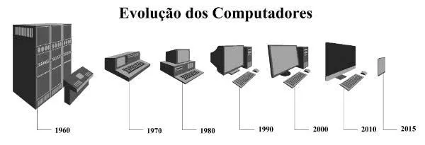

Informática
Informática (do francês: informatique, junção de "informação" e "automática") é um termo usado para descrever o conjunto das ciências relacionadas à coleta, armazenamento, transmissão e processamento de informações nos meios digitais, estando incluídas neste grupo: a ciência da computação, os sistemas de informação, a teoria da informação, o processo de cálculo, a análise numérica e os métodos teóricos da representação dos conhecimentos e da modelagem dos problemas. Mas também, resumidamente, a informática é a ciência que estuda o conjunto de informações e conhecimentos por meios digitais.

Leia mais...
EVOLUÇÃO DOS COMPUTADORES
Segundo a classificação acima, nós pertencemos à quarta geração dos computadores, o que revela uma evolução incrível nos sistemas de informação. Um ponto de destaque é que a evolução dos computadores ocorria de maneira mais lenta. Com o desenvolvimento da sociedade, meios de comunicação e a divulgação científica podemos ver a evolução dessas máquinas em dias ou meses. Alguns estudiosos preferem acrescentar a “Quinta Geração de Computadores” com o aparecimento dos supercomputadores, utilizados por grandes corporações como a NASA. Nessa geração, é possível avaliar a evolução da tecnologia multimídia, da robótica e da internet.
